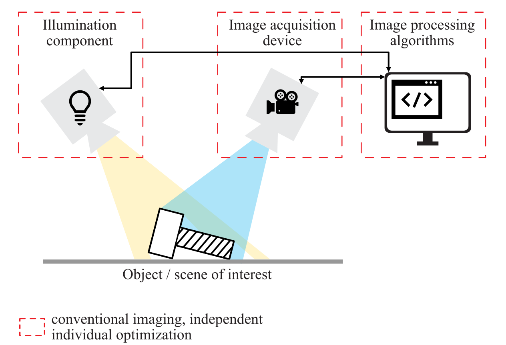
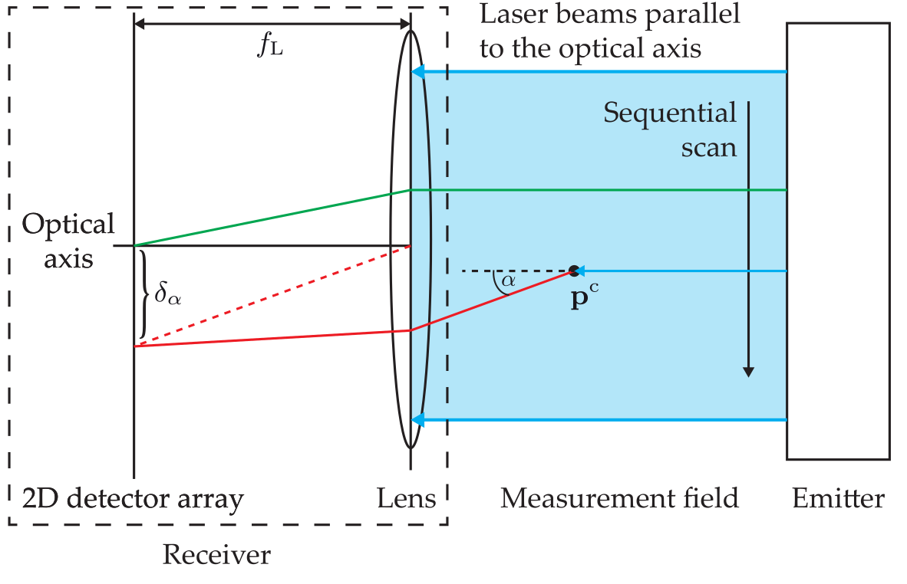
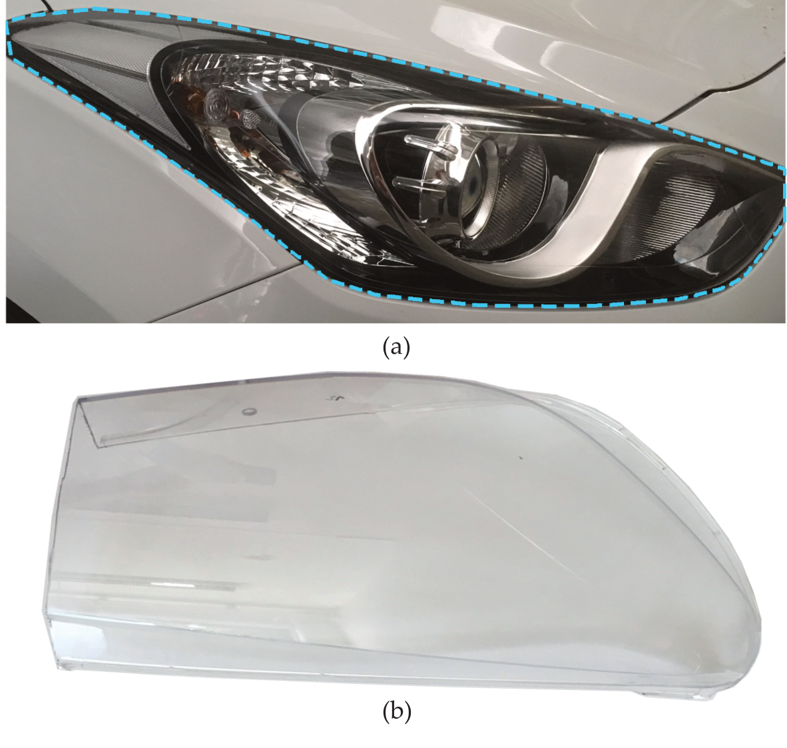
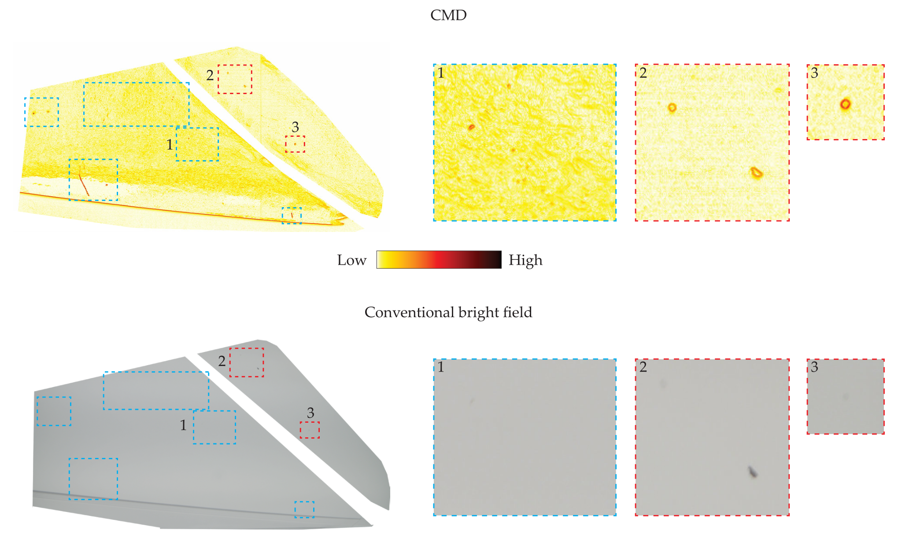
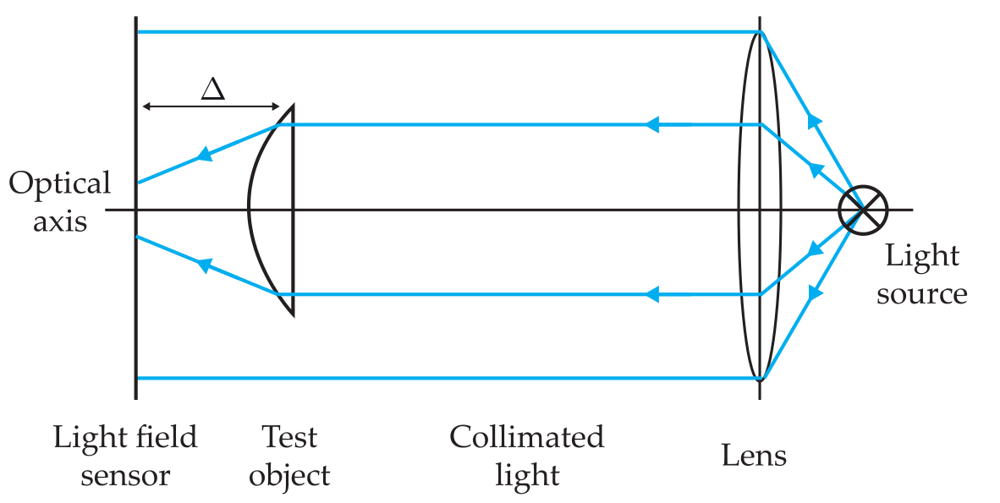
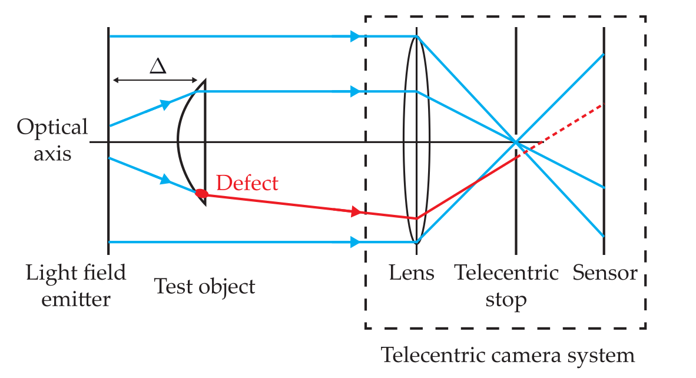
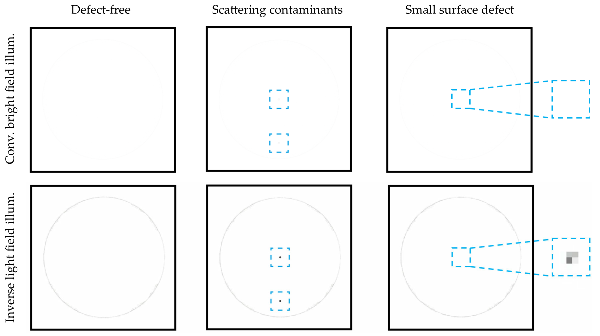

\(\begin{align} \newcommand{transp}{^\intercal} \newcommand{F}{\mathcal{F}} \newcommand{Fi}{\mathcal{F}^{-1}} \newcommand{inv}{^{-1}} \newcommand{stochvec}[1]{\mathbf{\tilde{#1}}} \newcommand{argmax}[1]{\underset{#1}{\mathrm{arg\, max}}} \newcommand{argmin}[1]{\underset{#1}{\mathrm{arg\, min}}} \end{align}\)
Computational Imaging
Introduction#
Content#
What is computational imaging
Motivating examples
Course roadmap / tentative schedule
Organizational information
What is computational imaging#
Imaging is the process of acquiring an image of a scene of interest that containes details of interest of the scene.
Example: Conventional optical imaging#
Conventional optical imaging (e.g., with a digital camera) usually involves a high-quality optical system consisting of multiple lenses (around 7 in 2020 high-end smartphones), a high-resolution sensor chip (around 12 megapixel in smartphones, up to 40 megapixel in digital single-lens reflex cameras) and some image processing algorithms to improve image quality with respect to the application (photography, microscopy, medical imaging, etc.).

Each of the three components is usually optimized for its own, i.e.:
the optics are designed to produce a sharp image of the scene on the sensor plane,
the sensor is optimized to digitize the incident light intensities as fast as possible with a minimum of noise and
the image processing algorithms are developed to mitigate general forms of remaining noise or visual artifacts.
Computational imaging#
In computational imaging the individual parts (i.e., optics, sensor, algorithms) are holistically considered as a single system and are optimized together to yield the best possible results with respect to the application (examples will be shown later).

As a main consequence of this approach, the intermediate image that is formed on the sensor may appear blurred or otherwise scrumbled. However, since the details of the image formation process are known, they can be mitigated by the image processing algorithms and the sought-after image can be recovered.
Degrees of freedom / design space#
Various parameters of the involved components can be varied to achieve optimal system performance.
Illumination#
The illumination can be varied in terms of
intensity,
emission direction,
emission profile,
spectrum,
polarization,
spatial pattern, etc.
Image acquisition#
The image acquisition can be varied in terms of
lens / lens system,
focal length,
shutter,
(programmable) aperture,
filters,
integration time etc.
To finally obtain an image which is optimal for the application on hand, all the variable parameters have to be computationally controlled and the intermediate image(s) have to be adequately processed. In other words, the image of interest has to be reconstructed.
Hence, in most computational imaging algorithms, the crucial part is represented by an image reconstruction procedure that tries to solve a so-called inverse problem. Usually, the forward process, i.e., the formation of an image on the sensor plane for a given scene, can be (physically) modelled and computed. The task of the algorithms is inversion of that process, i.e., to reconstruct the most probable scene which led to the observed image on the sensor.
Computational imaging allows to
acquire more information about the scene of interest as with conventional imaging and
to reduce the weight, cost and complexity of lens systems by shifting parts of the image formation process into the digital domain.
Motivating Examples#
Photography#
Note
Computational imaging applied to photography applications is often referred to as computational photography.
Reduction of weight and cost
By means of computational imaging, the number and required quality of the lenses of a camera can be reduced without negatively impacting the quality of the resulting images. The intermediate image on the sensor may appear unsatisfying to the naked eye (e.g., blurred) but the sought-after sharp image is reconstructed by the image processing algorithms. This reduces the cost, weight and complexity of the optical system of the camera.
In the extreme case, it is even possible to obtain sharp images without employing a lens at all (so-called lensless imaging).
Diffuser Cam
(Grace Kuo, Nick Antipa, Ren Ng, and Laura Waller. “DiffuserCam: Diffuser-Based Lensless Cameras.” Computational Optical Sensing and Imaging. Optical Society of America, 2017)
Lensless camera
(Xiuxi Pan et al, Image reconstruction with transformer for mask-based lensless imaging, Optics Letters (2022). DOI: 10.1364/OL.455378)
High dynamic range (HDR) imaging
Most commonly, images captured with digital cameras are stored with 8 bit precision per color channel (more details later). As a consequence, images of scenes with high dynamics regarding the light intensities will lose information resulting in either white oversaturated or completely black areas.
HDR imaging methods acquire a series of images with varying integration times and processes the images either to obtain a high dynamic range image (with more than 8 bit per channel) or to compress the dynamic range so that no images regions appear oversaturated or under exposed (so-called tone mapping).
Single-shot high dynamic range imaging
(Metzler, C., Ikoma, H., Peng, Y., Wetzstein, G., Deep Optics for Single-shot High-dynamic-range Imaging, CVPR 2020)
Light field imaging
In contrast to conventional cameras, light field cameras also capture the direction of incidence with which light rays enter the camera. This additional information allows to post-process the acquired to image to change the viewing perspective, to alter the focus distance or to enhance the depth of field.
Post-acquisition refocusing


Coded aperture imaging
In an optical system, the aperture is the optical or mechanical element that mostly limits the amount of light reaching the sensor (more details later). Making this element computationally controllable provides another handle for influencing the image formation process. By this means it is possible, e.g., to deblur images which are affected by motion blur or which have been acquired out of focus or to additionally capture depth information.
Coded aperture imaging for image and depth acquisition
(Levin, A., Fergus, R., Durand, F., Freeman, W. T. (2007). Image and depth from a conventional camera with a coded aperture. ACM transactions on graphics (TOG), 26(3), 70-es.)
Medical imaging and microscopy#
Tomography
In many medical imaging applications one is interested in obtaining threedimensionally resolved images about the internal structures of the human body without having to physically interacting with it. By means of tomographic reconstruction algorithms, several projection images acquired with penetrating radiation (e.g., X-rays) can be combined and processed to obtain an image slice at the position of interest.
Coded illumination for microscopic phase imaging
(Kellman, M. R., Bostan, E., Repina, N. A., Waller, L. (2019). Physics-based learned design: optimized coded-illumination for quantitative phase imaging. IEEE Transactions on Computational Imaging, 5(3), 344-353.)
In medical microscopy one is often interested in the phase (i.e., the direction of propagation) of the light that has been transmitted through a sample, rather than in its intensity (conventional imaging). This can be achieved by adequately processing a series of images acquired under varying illumination patterns learned with machine learning approaches.
Fourier Ptychography
In microscopy, the achievable lateral resolution (i.e., the resolutions along the axes parpendicular to the optical axis) is linked to the numerical aperture (more later) of the lens system. By acquiring multiple images under varying illumination one can reconstruct the complex phase via Fourier Ptychography resulting in an increased synthetic numerical aperture. By this means it is possible to up to double the resolution.
Visual inspection#
Deflection map acquisition and processing
The visual inspection of transparent objects is especially challenging. This is because the material defects of interest (scratches, inclusions of air bubbles, etc.) are transparent themselves and hence do not affect the light’s intensity. Instead, those defects change the propagation direction of light that has been transmitted through the test object. By acquiring the distribution of the light’s propagation direction behind the test object with high resolution (so-called deflection maps) and by processing them with suitable algorithms, material defects can be visualized with high contrast.



Inverse (light field) illumination
Both opaque and transparent test objects can be illuminated with specifically adapted, so-called inverse light fields that render their intended structures invisible to the camera but reveals material defects with high contrast. Such approaches allow to inspect the whole test object by acquiring a single image only.



Course roadmap / tentative schedule#
Tentative course schedule:
Nr. |
Date |
Lecture (14:00 - 15:30) |
Exercise (15:45 - 17:15) |
|---|---|---|---|
1 |
29.10.2025 |
Introduction |
|
2 |
05.11.2025 |
Basics |
|
3 |
12.11.2025 |
Light field methods |
Fourier transforms |
4 |
19.11.2025 |
Light field methods |
|
5 |
26.11.2025 |
Light field methods |
Light field calculations |
6 |
03.12.2025 |
Light field methods |
|
7 |
10.12.2025 |
Light transport analysis |
|
8 |
17.12.2025 |
Neural networks for computational imaging |
Light transport calculations |
9 |
07.01.2026 |
Neural networks for computational imaging |
|
10 |
14.01.2026 |
Inverse problems in computational imaging |
|
11 |
21.01.2026 |
Inverse problems in computational imaging |
Inverse problems |
12 |
28.01.2026 |
Inverse problems in computational imaging |
|
13 |
04.02.2026 |
Lensless imaging |
Inverse problems |
14 |
11.02.2026 |
On-site lecture |
|
15 |
18.02.2026 |
Coded spectral snapshot imaging |
Diffuser Cam |
Organizational information#
Course times#
Every wednesday from 14:00 - 15:30: primary lecture content.
Additionally every other wednesday from 15:45 - 17:15: discussion of exercises.
Christmas#
Last lecture before christmas brake on 17.12.2025.
Exam#
Will be oral - contact me for an examination appointment.
Course material#
Slides (i.e., Jupyter notebooks), lecture notes and exercises (including solutions) will be made available on https://computational-imaging.de.
You can send me questions any time to johannes.meyer@iosb.fraunhofer.de.